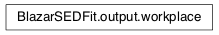

Moudule: output
This module contains all the classes necessary to the output
Classes and Inheritance Structure

Module API
-
BlazarSEDFit.output.clean_dir(dir_name)[source]
-
BlazarSEDFit.output.makedir(out_dir, clean_work_dir=True)[source]
creates a directory
-
BlazarSEDFit.output.set_workplace(out_dir, flag)[source]
sets a working place
Parameters
| Parameters: |
- dir – (str) directory mane
- flag – (str) flag name
|
|---|
-
class
BlazarSEDFit.output.workplace[source]
Bases: object
Class to set the working place
using static members (class members)
Variables
| Variables: |
- out_dir – directory name (default=./)
- flag – flag name (default=sed-fit-test)
|
|---|
-
flag = 'sed-fit-test'
-
out_dir = './'